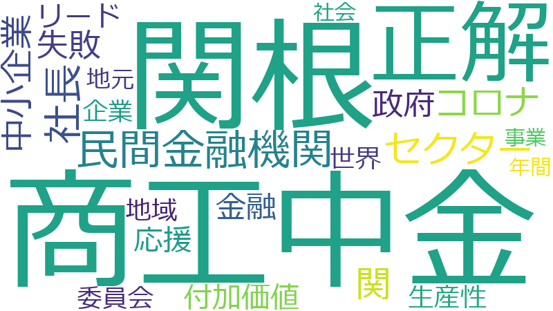

商工中金 、政府 、コロナ 、関根 、中小企業 、社長 、地域 、正解 、民間金融機関 、セクター 、世界 、企業 、失敗 、委員会 、応援 、金融 、リード 、事業 、付加価値 、地元 、年間 、生産性 、社会 、関
商工中金 、関根 、正解 、民間金融機関 、社長 、セクター 、関 、コロナ 、中小企業 、失敗 、政府 、金融 、付加価値 、応援 、リード 、生産性 、地域 、世界 、委員会 、企業 、地元 、年間 、社会 、事業